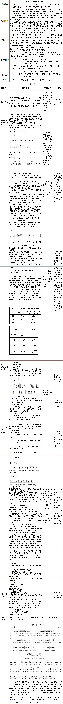

课例观摩一
《醇厚的中原韵》教学设计

《醇厚的中原韵》说课
一、教学背景分析：
本课是人民音乐出版社《高中音乐鉴赏》教材第二单元第四节的教学内容。本单元的学习旨在引导学生感受、体验我国民歌的不同地域风格及不同的民族风格，进而认识我国民歌是我国传统文化，也是世界优秀音乐文化中重要的精神财富，我们应肩负起传承、发展的重任。 本节教学是建立在初中已学习过的《十送红军》、《采茶舞曲》、《龙船调》等作品基础上进行的；同时学生已学习了本单元第二、三节的作品，这也是本节课授课的基础；学好本课内容有益于学生更进一步了解和认识我国中原地区民歌的体裁、风格及其成因，结合前面第二、三节和下一节《飘逸的南国风》的学习，学生将对我国传统音乐文化中民歌的艺术创作价值得到更全面的认识和总结，亦为第五、六单元世界民族民间音乐的学习和第十七单元《好汉歌》等新作的鉴赏打下基础。本课为一课时完成。
二、教学内容分析：
教材选用了河北民歌《孟姜女哭长城》、山东民歌《沂蒙山小调》、河南民歌《王大娘钉缸》三首代表中原情韵的民间歌曲，现逐一分析如下：
1. 《孟姜女哭长城》 歌词以“十二月体”为基础，共十三段，翔实而细致地描述了孟姜女的故事。歌曲旋律在江苏母体的基础上进行“加花”，使旋律富有装饰性，显得棱角较大，曲调较高亢。不仅局部地改变了音乐的性格，而且也大大增加了歌唱的难度，事实上，这类曲目大多数都是由职业和半职业的说唱艺人作为独立的节目表演给听众的。 这些正是 “ 孟姜女调 ” 流传到河北以后，在歌词、曲调、演唱方式上所发生“同体”性变异。 2. 《沂蒙山小调》 又名《沂蒙山好风光》，旋律来自花鼓调《十二月调》， 词是全新创作的， 最初流传在山东临沂地区，后传遍全国。 这首 徵调式民歌， 由四个乐句构成，采用“鱼咬尾”的旋法 ， 按照“商—宫—羽—徵”的逻辑顺序发展，正体现了我国民族曲式结构原则之一的——“起承转合”。 3. 《王大娘钉缸》 《王大娘钉缸》是河南民间歌舞剧《王大娘钉缸》中，钉缸者出场时唱的一段歌曲。 此曲采用了一领众和的演唱方式。从整体上看，上句与下句均为 6 小节，彼此呼应，显得工整平衡；而从上下句的局部来看，唱词与衬词一短一长，表现出一种不平衡，明显增强了歌曲的明快、轻松、诙谐的色彩。这也恰恰体现了民歌的地方风格与它所在地的语言环境、特点有着密切的关系。 三、 学生情况分析： 1. 本课教学内容与学生平时聆听的音乐风格有一定距离。 2. 学生在以往学习中对中国民歌及相关知识有一定的感性认知，在此基础上共同探究我国中原地区民歌特点及社会价值是可行的。 3. 教师针对高中学生能够较为理性思考的特点，用表格的形式对教学内容进行总结，便于学生对所学知识较为理性、清晰的理解和记忆。 四、教学准备： 为了更有效的进行教学，教师需要课前做好如下 准备： 第一方面 教学目标 （一）“情感态度与价值观”目标： 鉴于高中阶段是学生从感性思维向理性思维发展的重要时期，我把“情感态度价值观”目标设计为： 感受、体验中原地区几首代表民歌的音乐情绪，愿意主动探究中原地区民歌的风格特点。 （二）“过程与方法”目标： 鉴于高中学生更擅长理性思维： 设计参与“聆听民歌、学唱民歌、观看视频、对比探究、体验不同地域民歌的不同音乐形态与情感”的音乐学习过程。 （三）“知识与技能”目标我设计为： 1. 聆听《孟姜女》、《孟姜女哭长城》，认识民歌的变异性特征， 探究形成汉族南北民歌差异的原因。 2. 聆听、比较《王大娘钉缸》和《好汉歌》，认识民歌与创作歌曲之间的区别，了解民歌是作曲家的创作源泉之一。 3. 能够运用音乐要素感受、体验中原民歌 的主要特点。 第二方面 教学重难点： （一）教学重点 （二）教学难点： 针对之前学生情况分析 , 本课教学难点为： 体验中原地区民歌的醇厚韵味和音乐风格。 四、教学方法： 本节课采用了 直观演示、参与体验和对比探究的教学方法。 五、教学过程与实施： 综合上述分析，我的教学过程设计为三个部分，即导入、新授、课堂小结与提升。各部分的具体实施详述如下： （一）导入： 导入部分设计了两个环节，首先为启发学生回忆旧知，聆听青海花儿《北斗七星刚》回顾上节课所学的民歌知识，之后教师弹唱江苏民歌《孟姜女》，学生对比聆听两首民歌的不同之处，引出本节新授。请看视频 高中音乐课程标准中提出：兴趣是学习音乐的基本动力，是学生与音乐保持密切联系的前提。导入设计意图为：引发兴趣、巩固旧知、承上启下。 （二）新授部分， 共分为三个环节 第一个环节：赏析民歌《孟姜女》 步骤一：赏析江苏小调《孟姜女》，我将此步骤分为三步，意在回顾传统民歌创作手法——鱼咬尾，为学习新知做准备。 步骤二：对比赏析河北民歌《孟姜女哭长城》，我将此步骤也分为三步 第一步的设计意在引导学生有指向性聆听，进而再次强化民歌的流变性特点。 第二步师生 以两首《孟姜女》调的第一乐句为例，采用 模唱、谱例分析、对比演示以及利用白板的交互功能等教学方法和手段， 深入分析探讨两首曲调的不同之处，学习“加花”和“同体变异”这两个新的知识点。 第三步引导学生从地域、方言等角度，思考同体变异的成因？ 这个安排是针对高中生的学习特点，意在引导学生关注音乐现象更关注其成因。同时了解中原文化的包容性特点